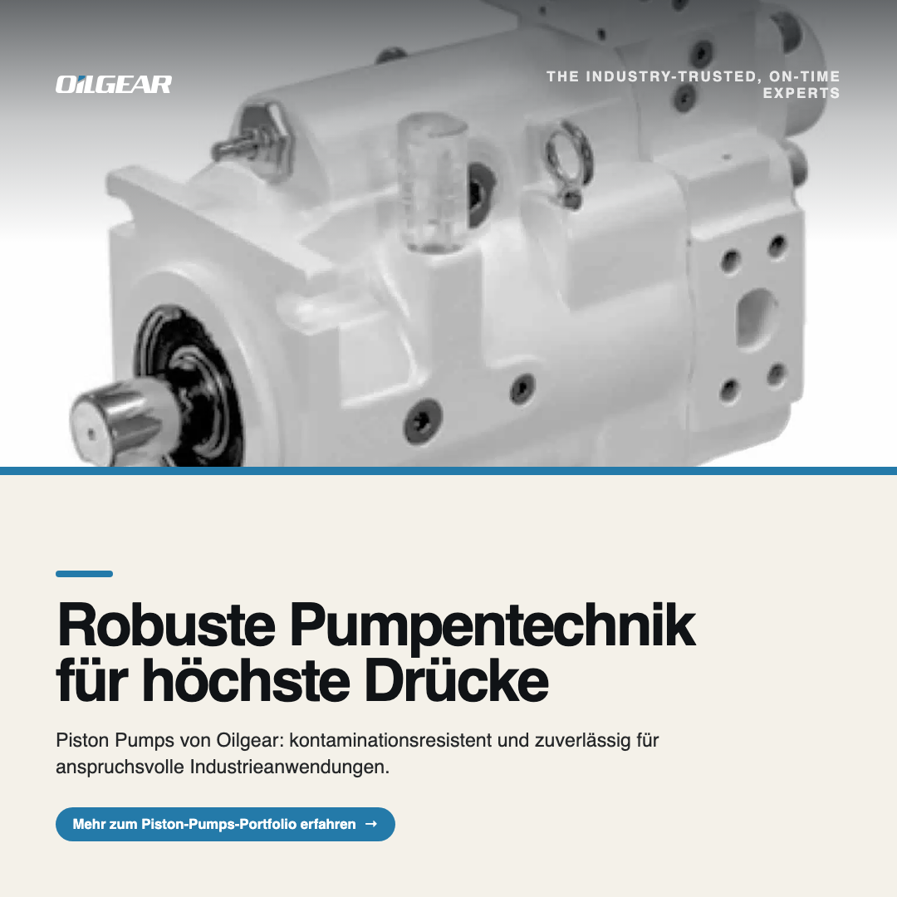
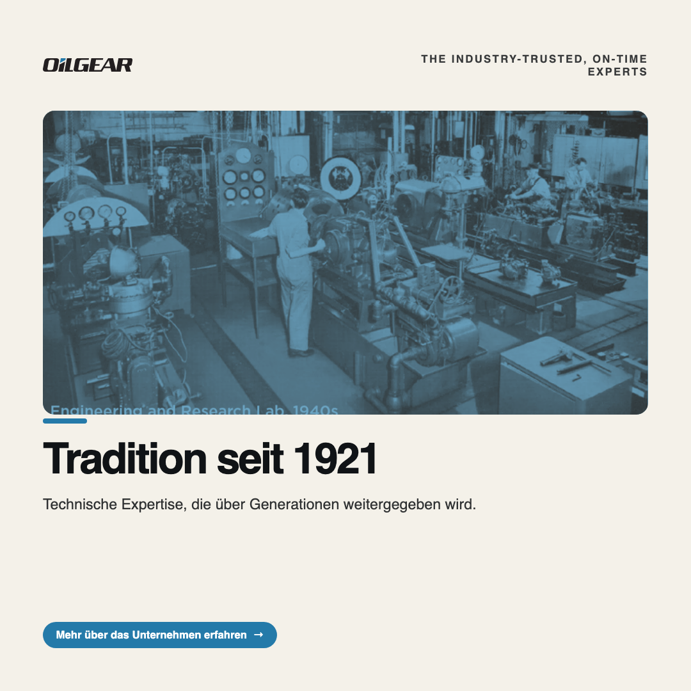
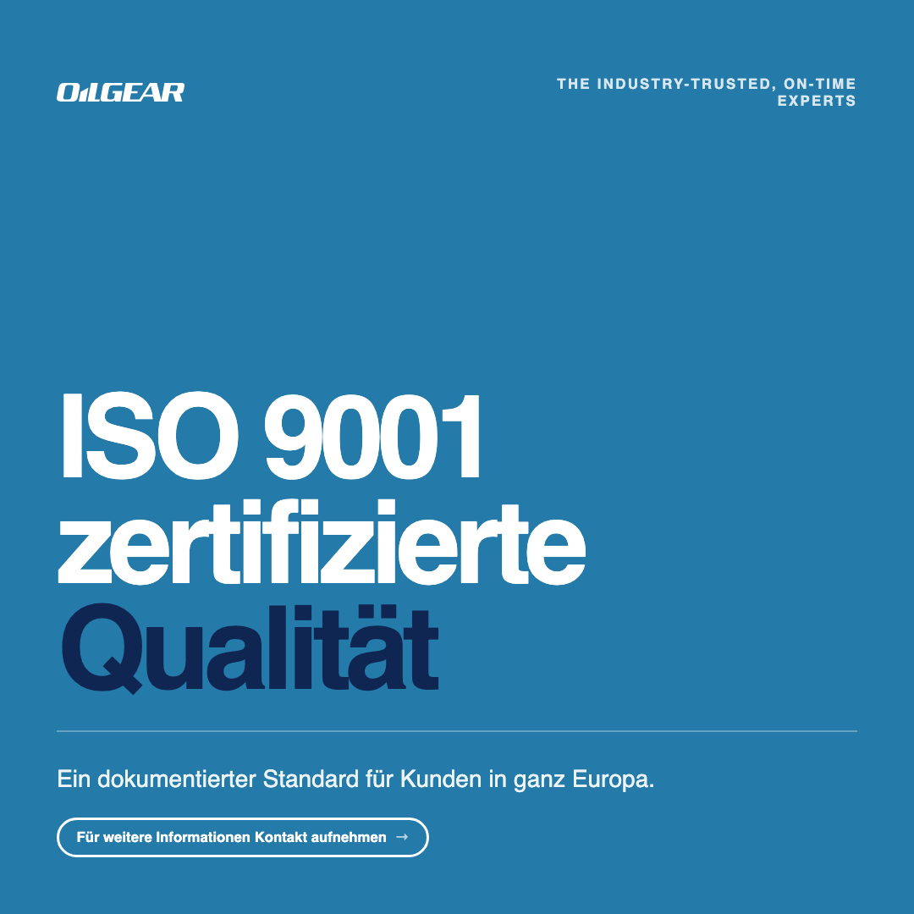

MARKETS
EDITION 08 · 2026
Oilgear
Towler
Wie Oilgear Towler seine technische Kompetenz seit 1921 in digitale Sichtbarkeit und B2B-Vertrauen übersetzt.
![Oilgear Towler]()
Wo Oilgear Towler
heute steht
Bestandsaufnahme von Marke, Kanälen und bisheriger Kommunikation — ehrlich und ohne Schönfärberei.
Wo Oilgear Towler heute steht
Stärken treffen Chancen
- —Seit 1921 etablierter, weltweit tätiger Hydraulikspezialist
- —ISO 9001 zertifiziert – belegter Qualitätsstandard
- —Patentiertes TRANSFER BARRIER® Pumpensystem für Spezialflüssigkeiten
- —Engineering-Support in über 50 Ländern weltweit verfügbar
- —Meta-Descriptions durchgängig außerhalb empfohlener Länge
- —Nur 5 von 11 Seiten mit vollständigen OG-Tags
- —Keine FAQ-Inhalte für KI-Sichtbarkeit vorhanden
- —Instagram und Facebook von der Website aus nicht verlinkt
- —FAQ-Formate können KI-gestützte Suche zusätzlich erschließen
- —LinkedIn-Ausbau kann Fachautorität bei B2B-Entscheidern stärken
- —Aftermarket-Content kann Bestandskunden zusätzlich binden
- —Automobil-Prüfsysteme bieten Potenzial für neue Zielgruppen
- —Risiko, dass Wettbewerber KI-Suchflächen früher besetzen
- —Risiko sinkender Sichtbarkeit ohne optimierte Meta-Daten
- —Sichtbarkeitslücke kann Vertrauen bei neuen Kontakten kosten
Klare Ziele,
klare Kennzahlen
Vier priorisierte Ziele, abgeleitet aus dem Status quo — jedes mit Kennzahlen, an denen sich Erfolg messen lässt.
Vier Ziele, die aufeinander einzahlen
Bestehendes LinkedIn-Profil regelmäßig mit fachlich fundierten Inhalten bespielen, um B2B-Vertrauen aufzubauen.
Meta-Descriptions und Open-Graph-Tags vervollständigen, um Klickrate und Social-Vorschau zu stärken.
Zitierfähige Frage-Antwort-Formate zu Produkten und Services aufbauen für KI-gestützte Suchergebnisse.
Prüfen, ob bestehende Profile bespielt oder neue Kanäle aufgebaut werden, dann Content ausrollen.
Drei Kanäle,
klare Rollen
LinkedIn, Instagram und Facebook — jeder mit eigener Aufgabe, Zielgruppe und Tonalität, aber einer gemeinsamen Story.
Jeder Kanal mit eigener Aufgabe
Einmal produzieren, dreimal erzählen
Ein Fachthema – etwa die TRANSFER BARRIER® Pumpe – wird für jeden Kanal passend übersetzt: technisch-fundiert für LinkedIn, visuell-nahbar für Instagram, kompakt-informativ für Facebook.
Technische Tiefe: Funktionsweise und Einsatzgebiete der TRANSFER BARRIER® Pumpe im Detail erklärt.
Bildstarker Einblick in Fertigung und Technik hinter der Spezialpumpe – kompakt und anschaulich.
Kurze Vorstellung der Spezialpumpe mit Verweis auf weiterführende Informationen auf der Website.
Fünf Content-
Pillars
Ein System aus Themensäulen — damit jeder Beitrag ein Ziel hat und die Marke über Zeit ein klares Profil bekommt.
Fünf Säulen, ein Profil
Erklärungsbedürftige Hydraulik- und Fluidtechniklösungen werden verständlich und vertrauensbildend aufbereitet.
Das Leistungsspektrum wird entlang konkreter Nutzenversprechen statt reiner Aufzählung erklärt.
Werte und Qualitätsversprechen werden mit belegbaren Fakten wie Zertifizierungen und Unternehmensgeschichte unterlegt.
Authentische Einblicke in Teams und Arbeitsweise machen die Marke nahbar, ohne unbelegte Personendetails zu erfinden.
Ausschließlich belegte Kennzahlen und überprüfbare Fakten schaffen Glaubwürdigkeit ohne unbelegte Superlative.
Von der Säule zum Beitrag
Vom Plan
zum Beitrag
Ein konkreter Redaktionsplan über vier Wochen — mit realistischer Frequenz, Formatmix und ausgewogenen Contentschwerpunkten.
Redaktionsplan · Woche 1 & 2
Redaktionsplan · Woche 3 & 4
Zwölf Posts,
kein Copy-Paste
Vier Beiträge je Kanal — kanalgerecht in Tonalität, Format und CTA, als fertige KI-Motive im 4-Wochen-Kalender. Anschließend drei davon als Mockup im Oilgear Towler-Branding.
Zwölf Motive, ein Fahrplan

Fachwissen & Problemlösung
Hydraulische Systeme in Schmiede-, Extrusions- und Öl- und Gasanwendungen stellen hohe Anforderungen an Pumpentechnik: konstante Fördermengen, Kontaminationsresistenz und Zuverlässigkeit unter Volllast. Die Piston-Pumps-Serien von Oilgear – darunter XD5, PVWJ und PVG – basieren auf Hard-on-Hard-Technologie und sind für genau diese Einsatzbedingungen konzipiert. Variable Ausführungen steigern die Energieeffizienz, fixe Baureihen liefern konstantes Fördervolumen auch bei hohem Schmutzeintrag. Für Entscheider in Maschinenbau und Industrie bedeutet das: robuste Pumpentechnik, die auf Langlebigkeit statt kurzfristiger Lösungen ausgelegt ist.
#Hydraulik #Axialkolbenpumpen #Maschinenbau #Fluidtechnik


Menschen & Unternehmenskultur

oilgear_towler Von den ersten Hydrauliksystemen bis zu heutigen Hochleistungslösungen: Oilgear steht seit 1921 für Fluidtechnik-Expertise. Getragen wird diese Tradition von Teams an internationalen Fertigungs-, Service- und Schulungsstandorten, die technisches Wissen über Generationen weitergeben. Ein Blick zurück zeigt, worauf diese Kontinuität aufbaut.

Vertrauen, Qualität & Verantwortung
Qualität ist bei Oilgear kein Versprechen, sondern ein zertifizierter Standard: Das Unternehmen ist nach ISO 9001 zertifiziert. Für Kunden in Deutschland, Österreich, der Schweiz und weiteren europäischen Märkten bedeutet das nachvollziehbare Prozesse und gleichbleibende Qualität – von der Fertigung bis zum Service. Wer auf zuverlässige Hydrauliktechnik setzt, profitiert von dieser dokumentierten Basis.

Von der Idee
zur Umsetzung
Was wir empfehlen — und wie eine Zusammenarbeit konkret abläuft, Schritt für Schritt.
Vier Empfehlungen auf den Punkt
Bestehendes Profil wöchentlich mit Fachinhalten aus Produkt- und Servicebereich befüllen, um Sichtbarkeit bei Entscheidern zu erhöhen.
Meta-Descriptions und Open-Graph-Tags auf allen Seiten vervollständigen, um Klickrate und Social-Vorschau zu verbessern.
Zitierfähige Frage-Antwort-Inhalte zu Produkten und Services ergänzen, um Sichtbarkeit in KI-gestützten Suchergebnissen zu stärken.
Vor Content-Aufbau prüfen, ob bestehende Profile bespielt oder neue Kanäle aufgebaut werden müssen.
So arbeiten wir zusammen
Ziele, Tonalität und Themen gemeinsam schärfen.
Monatlicher Contentplan je Kanal und Pillar.
Text, Grafik & Video — im Branding des Kunden.
Kurze Freigabeschleife — Sie behalten die Kontrolle.
Ausspielung, Monitoring und Antworten.
Kennzahlen auswerten — und zurück zu Schritt 1.
Was Umsetzung kostet
Marketingkonzept, 9 Posts, Flyer, Print-Vorlagen, Visitenkarten, private Landingpage & SEO/GEO-Check — in 24 h.
Sprechen wir über
Ihre Sichtbarkeit.
Ein unverbindliches Erstgespräch genügt, um zu sehen, was für Oilgear Towler realistisch drin ist. Ich freue mich darauf.
MARKETS
![QR-Code]()